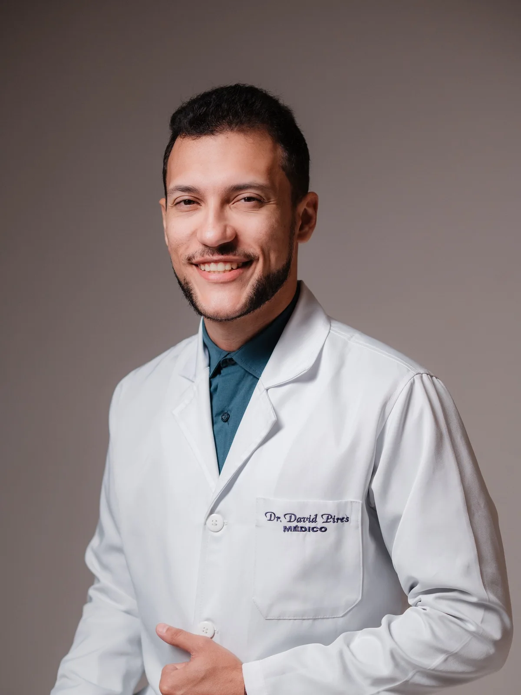
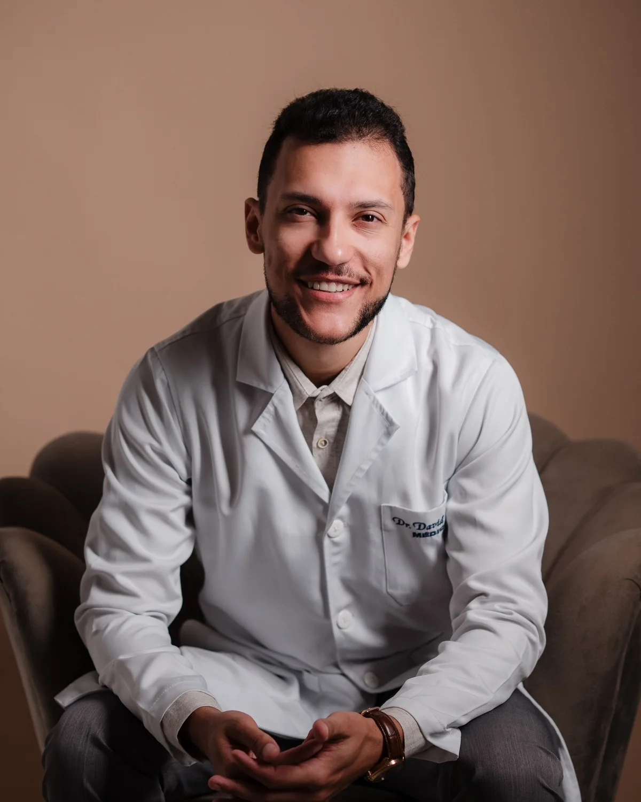
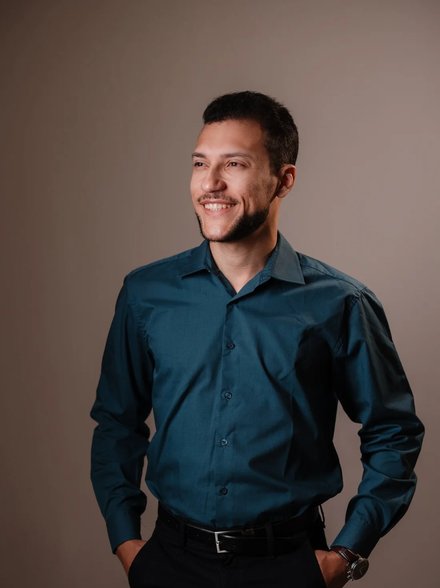

Cirurgia do Joelho
Tratamento de dor crônica, luxações, instabilidades e entorses. Com foco em preservação articular e retorno seguro às atividades.
Diagnóstico preciso, cirurgia minimamente invasiva e tratamento humanizado — para você voltar a se movimentar sem dor.

Atuação focada em ortopedia do joelho, traumatologia e cirurgia minimamente invasiva — combinando técnica atualizada e um plano de tratamento sob medida para cada paciente.
Agendar ConsultaTratamento de dor crônica, luxações, instabilidades e entorses. Com foco em preservação articular e retorno seguro às atividades.
Abordagem integral de lesões de menisco, ruptura de LCA, lesões de cartilagem e instabilidades, buscando a melhor técnica para cada recuperação.
Manejo especializado voltado à qualidade de vida: infiltrações, osteotomias e próteses/artroplastias, indicadas conforme o estágio da doença.
Atendimento com técnicas modernas de osteossíntese, visando a melhor recuperação possível e o retorno funcional.

Médico ortopedista e traumatologista pela Santa Casa de Misericórdia de Ribeirão Preto, especialista em cirurgia do joelho pela PUC Campinas e membro da Sociedade Brasileira de Cirurgia do Joelho.
Especialista em ortopedia esportiva pelo Centro Médico de Campinas, com experiência como médico do time de futebol feminino do Palmeiras. Preceptor da residência de Ortopedia e Traumatologia pela Universidade Estadual do Pará.
Um cuidado que começa na escuta e termina no seu retorno às atividades.
Cada consulta é dedicada a ouvir seus sintomas e explicar detalhadamente todas as opções de tratamento.
Orientação especializada sobre prevenção, recuperação pós-operatória e readaptação funcional.
Utilização das técnicas mais atuais em ortopedia, com foco em procedimentos minimamente invasivos.
Atualização constante em cursos, congressos e treinamentos técnicos em ortopedia e traumatologia.
Instituições e serviços que formam a base da prática clínica e cirúrgica.
Residência em Ortopedia e Traumatologia
Especialização em Cirurgia do Joelho
Membro
Especialização em Ortopedia Esportiva
Médico do time de futebol feminino
Preceptor da residência de Ortopedia e Traumatologia
Ficou alguma dúvida? Fale diretamente pelo WhatsApp.
Tirar dúvidasO agendamento é feito diretamente pelo WhatsApp, no número (53) 99117-8239. O atendimento acontece de segunda a sexta-feira.
Os dois. As consultas podem ser presenciais, no consultório, ou online — definidas conforme o seu caso no momento do agendamento.
No Rio Med Saúde — Av. Marechal Rondon, 1649, Santa Clara.
Dor crônica no joelho, lesões de menisco e de ligamento cruzado anterior (LCA), lesões de cartilagem, instabilidades e luxações, artrose em todos os estágios e fraturas em geral.
Se você já tiver exames de imagem (raio-X, ressonância, tomografia) e laudos anteriores, leve-os: eles ajudam no diagnóstico e podem acelerar a definição do tratamento.
Não. Boa parte dos casos é conduzida de forma conservadora, com reabilitação, medicação e infiltrações quando indicadas. A cirurgia entra quando é a melhor opção para o seu quadro — e isso é explicado em detalhe na consulta.
Agende sua consulta e dê o primeiro passo para um tratamento ortopédico moderno, técnico e humanizado.
